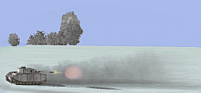

|  |
BELLUM
Campaña dinámica para FB
|
| View previous topic :: View next topic |
| Author |
Message |
JG10r_Dutertre
Joined: 07 Mar 2004
Posts: 945
|
 Posted: Fri Aug 06, 2004 3:32 pm Post subject: New Changes - Manual add ons. Posted: Fri Aug 06, 2004 3:32 pm Post subject: New Changes - Manual add ons. |
  |
|
Today introduced new changes on parser.
Changed lights detection:
-Now landing lighs are free to use while plane is on ground.
-Once you have taked off, you have 5 minutes to free use lights.
-Lights shud be turned off inside that 5 minutes limit after takeoff.
- You can use lights in previous 5 minutes to land. If you dont land in
less than 5 minutes, it will count as a fault (less points and reduce
fairplay)
Pilot Kill detection:
Now when somebody kills a pilot
(not a gunner) the airkill will be assigned to the pilot who scored the
pilot kill. No matter what later FB engine assigns the kill to. Pilot
that recive a PK can leave game without waiting plane crash.
Safe Landing detection:
Now is considered a safe landing only when you land in a friendly base. If you land at any place not in base (dich, crash land, emergency landing) you have to bail out. If you dont bail you get MIA status.
This is because there are many dichs on enemy territory and FB do
not assigns MIA status on this cases. The exploid to avoid be captured
was: dich + disconect. So, now if you dich you have to bail always:
if dich is on friendly zone, you get bailed. If you dich on enemy,
sometimes you get MIA, and sometimes you get bailed (escape). This
depends on internal FB engine. If you dont bail, parser assumes
exploid, no matter if you are on friendly or not zone.
If you have an accident before take off, you have to bail too.
If you land before 5 minutes of mission progress you will NOT be counted as "safe in base", and you will get MIA if you dont bail. This is to avoid taking off and landing for the points.
To sumarize:
Normal land on base (after 5 minutes flight)=> safe on base => you can bail, bail flag is cleared.
Emerg land on base => safe on base => you can bail, bail flag is cleared
Emerg land outside base => not safe on base => you have to bail or you get captured.
In this last case, the status will be what FB engine logs after you bail out.
If you don't land in base: always bail, no matter how long you take.
if you land in base: if you
like, you can bail too, and bail will not be showed. This can help host
protection from been strafed, but worls for all, not only hosts.
As said, this cases are like just steping out plane and going for a beer after mission. 
S!
Last edited by JG10r_Dutertre on Fri Sep 24, 2004 11:45 pm; edited 4 times in total |
|
| Back to top |
|
 |
JG10r_Dutertre
Joined: 07 Mar 2004
Posts: 945
|
| Posted: Fri Sep 24, 2004 11:56 pm Post subject: |
|
|
Hello.
Now you have 2 new admin tools, aviable from the register menu:
( http://il2fb-bellum.com.ar/registro.html )
Leave Squadron: ( http://il2fb-bellum.com.ar/leave_squadron.php )
+ From here you can remove your pilot from a squadron.
+ Your will be placed in a default holder squadron called NONE.
Your stats will be not deleted. Later you can join a different squadron
and your stats will be moved into new squadron.
+ If you are the CO, you can not leave squadron, till you first give CO place to other member.
+ If you are the CO and only member, you shuld delete squadron (not yet implemented).
Delete Pilot: ( http://il2fb-bellum.com.ar/delete_pilot.php )
+ From here you can delete your pilot from database. Name and stats will be erased, and no chance to recover them.
+ You cant delete your self if you are member of a squadron. If
this is the case, you have to first "Leave Squadron" and after that
"Delete pilot".
Squad admin >> Squadron >> Remove pilot
+Now, in suqad admin tools there is a poction to remove an active
pilot from squadron squadron. To do that you have to be the CO or XO
with edit rights. Load squad admin page, select your squadron and then
select the pilot nickname to remove from squadron.
+Basically this is the same as "Leave squadron" but here you have
the option to select a name of your squadron members list. Same
restrictions aply if you are the CO and you are removing yourself from
here: not allowed till you design a new CO.
Please, report in this topic any problem you find related to this new options, or in bug land forum.
S! |
|
| Back to top |
|
|
|
Watch this topic for replies
   |
You can post new topics in this forum
You can reply to topics in this forum
You can edit your posts in this forum
You can delete your posts in this forum
You can vote in polls in this forum
You can moderate this forum |
Powered by phpBB 2.0.10 © 2001, 2002 phpBB Group
|